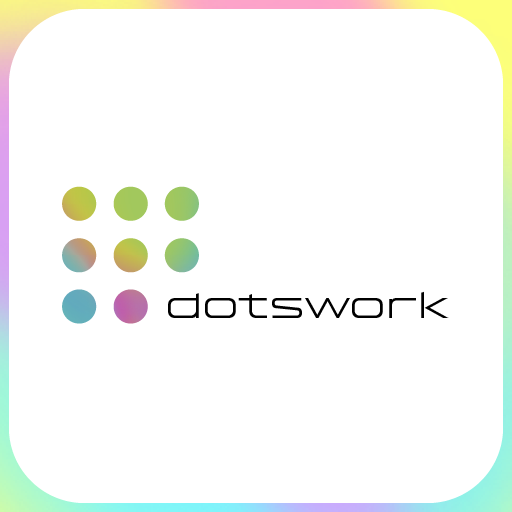
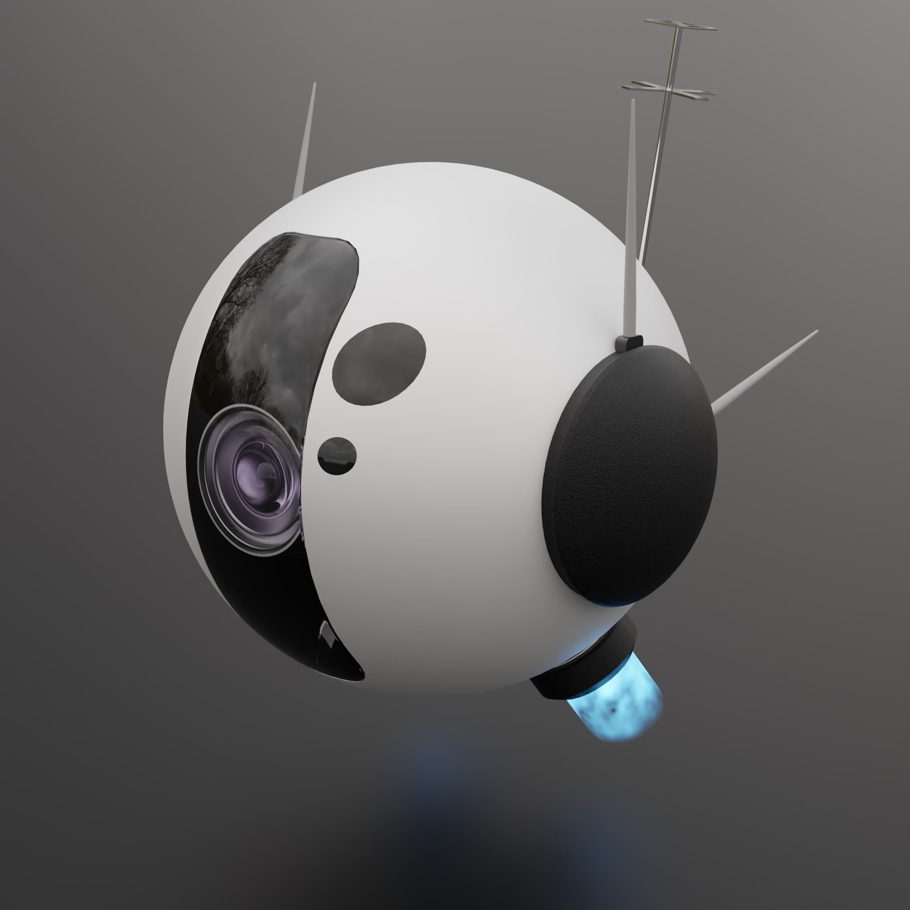
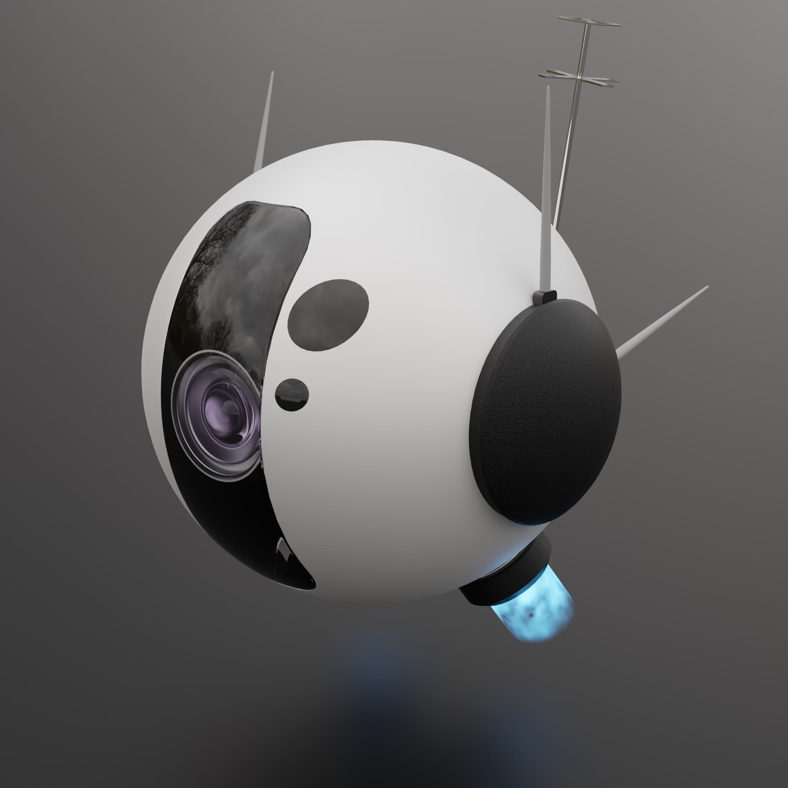

Hello!
Halo!
Hoi!

I'm Ilham, an Indonesian who keeps finding themselves lost in making new things. Primarily a
multi-hobbyist of many things and is still growing. But so far I've delved the furthest into:
- 3D
- Illustration
- and various design works
This page purpose is to "compile" most of my work into a remote portfolio. Feel yourself at home!
- 3D
- Illustration
- and various design works
This page purpose is to "compile" most of my work into a remote portfolio. Feel yourself at home!
"Dotswork" is my alias.
(THREE)D
::Some of my most recent 3D works. Millions of vertices are extruded, probably.

 


Design and Motion Graphics
::Latest graphic and motion design